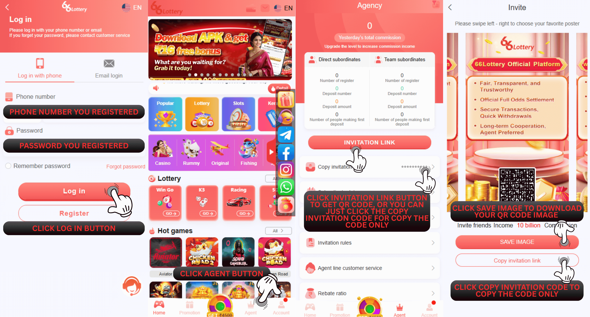

66 Lottery एजेंट कैसे बनें
आपको 66 Lottery से किसी और एजेंसी की मंजूरी लेने की आवश्यकता नहीं है। आपका खाता 66 Lottery एक सदस्य और एक एजेंसी खाता दोनों है! आप आमतौर पर साझा कर सकते हैं और दोस्तों को सामान्य रूप से

ㄍBack